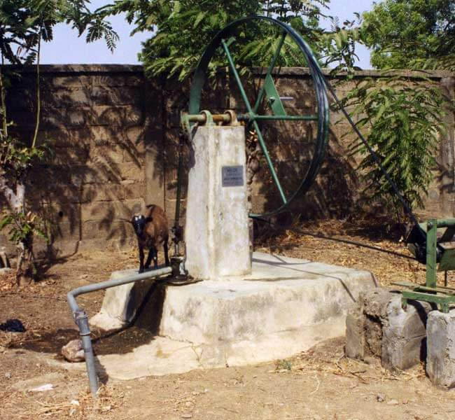

Perché questo progetto
Il progetto sostiene la realizzazione e, quando necessario, la manutenzione di pozzi nelle comunità del Burkina Faso. La disponibilità di acqua più vicina e accessibile può ridurre la fatica quotidiana e favorire condizioni igieniche migliori.
Come interveniamo
Gli interventi vengono individuati in relazione ai bisogni segnalati dai referenti sul territorio. La costruzione di un pozzo è accompagnata dall’attenzione alla sua funzionalità nel tempo e alla responsabilità della comunità che lo utilizza.